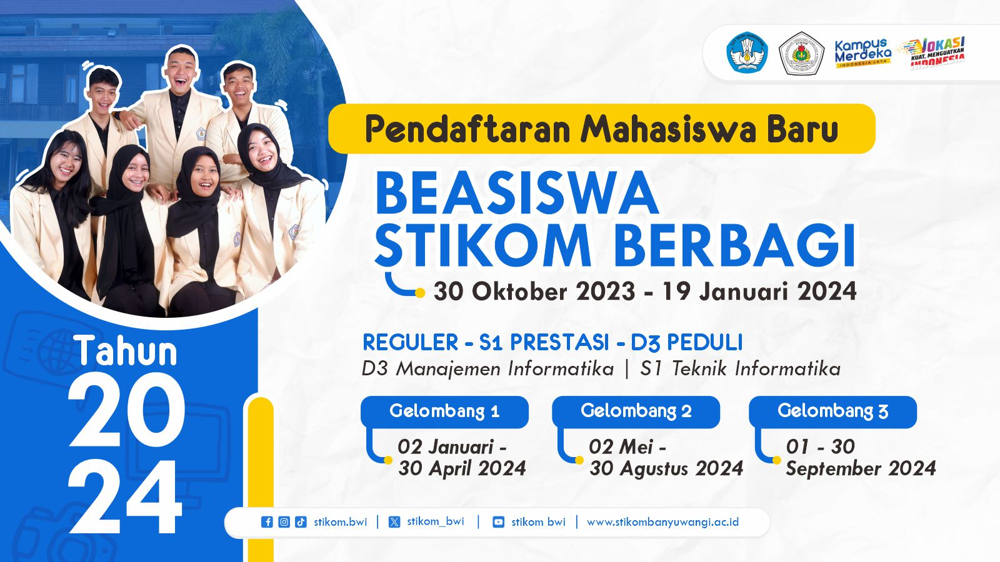

Mahasiswa STIKOM adalah individu yang sedang menempuh pendidikan tinggi di Sekolah Tinggi Ilmu Komputer (STIKOM). Mereka belajar berbagai disiplin ilmu terkait teknologi informasi dan komputer.
Peran Mahasiswa STIKOM
Mahasiswa STIKOM berperan penting dalam pengembangan teknologi dan inovasi. Mereka dilatih untuk menjadi profesional yang kompeten dan siap menghadapi tantangan di dunia kerja.
Profil Mahasiswa Berprestasi
Ahmad Rifai
Ahmad Rifai adalah seorang mahasiswa STIKOM yang berprestasi dalam bidang pemrograman dan telah memenangkan beberapa kompetisi.
Budi Santoso
Budi Santoso adalah seorang mahasiswa STIKOM yang aktif dalam kegiatan organisasi dan memiliki banyak kontribusi dalam acara kampus.
Chandra Wijaya
Chandra Wijaya adalah seorang mahasiswa STIKOM yang dikenal dengan proyek-proyek inovatifnya di bidang teknologi informasi.
STIKOM Berbagi
STIKOM PGRI Banyuwangi menawarkan berbagai jalur pendaftaran untuk calon mahasiswa baru. Salah satu program unggulannya adalah STIKOM Berbagi, yang memberikan beasiswa kuliah gratis sampai lulus bagi siswa kelas XII yang akan lulus tahun 2024. Program ini telah mencetak banyak mahasiswa dan alumni berprestasi.

Pendaftaran STIKOM Berbagi 2024 dibuka mulai tanggal 30 Oktober 2023 s/d 19 Januari 2024. Selain STIKOM Berbagi, ada juga jalur pendaftaran Reguler - S1 Prestasi - D3 Peduli. Program ini dibuka dalam beberapa gelombang dengan jadwal sebagai berikut: Gelombang 1 (01 Januari - 30 April 2024), Gelombang 2 (02 Mei - 30 Agustus 2024), dan Gelombang 3 (01 - 30 September 2024).
Pendaftaran ini memiliki persyaratan yang mudah dan biaya kuliah yang terjangkau. Dengan materi dan dosen yang menarik, serta lokasi kampus yang strategis di tengah kota Banyuwangi, STIKOM PGRI Banyuwangi menyediakan berbagai kegiatan yang akan menunjang softskill dan hardskill mahasiswa untuk dunia kerja.
Untuk informasi lebih lanjut, kunjungi Official Instagram - @stikom.bwi dan website PMB STIKOM - pmb.stikombanyuwangi.ac.id atau hubungi Help Center PMB STIKOM (0821-4395-4320 - Natasya).
STIKOM PGRI Banyuwangi, Kampusnya Jagoan Technopreneur Masa Depan!
Mahasiswa STIKOM mengikuti berbagai kegiatan akademik dan non-akademik sepanjang tahun. Cuaca mendukung, dan kegiatan-kegiatan tersebut sangat menyenangkan! Saya sangat menikmati waktu saya di STIKOM!
Mahasiswa STIKOM mengikuti berbagai kegiatan akademik dan non-akademik sepanjang tahun. Cuaca mendukung, dan kegiatan-kegiatan tersebut sangat menyenangkan! Saya sangat menikmati waktu saya di STIKOM!